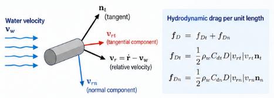
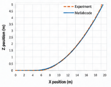
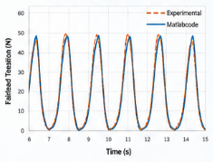

계류선은 왜 단순한 비선형 스프링이 아닌가?
시간영역에서 이해하는 계류선 동역학의 구조역학적 의미
계류선 동역학, 계류선 동적 해석, 부유식 해상풍력 계류, 계류선 장력, 페어리드 장력, 비선형 계류선, 시간영역 해석, 유체 항력, 상대유속, 계류선 유한요소해석, Newmark-beta, 부유구조물 계류
계류선은 부유구조물이 제자리를 유지하도록 잡아준다.
부유체의 전체 운동만 보면 계류시스템을 하나의 등가 강성으로 표현하는 경우가 많다. 평형 위치 부근의 작은 운동을 다룰 때는 이 방법이 매우 유용하다.
그런데 그 강성 안에는 무엇이 숨어 있을까?
실제 계류선에는 질량이 있다. 형상이 변하고, 변형에 따라 장력이 달라진다. 중력과 부력을 받으며, 주변 물과 상대운동을 하기 때문에 유체 항력도 발생한다.
따라서 페어리드에서 구조물로 전달되는 힘은 변위만으로 결정되지 않는다.
이 글에서 다루려는 질문은 간단하다.
계류선은 언제까지 복원 스프링으로 볼 수 있고, 언제부터 하나의 동적 구조물로 해석해야 하는가?
핵심은 다음과 같다.
계류선은 단순히 복원강성만 제공하는 것이 아니다. 계류선 자체의 질량, 변형, 유체와의 상호작용, 그리고 운동이 부유구조물에 전달되는 힘을 결정한다.
계류선을 스프링 하나로 바꾸면 무엇이 사라지는가?
페어리드 변위를 \(u\)라 하자.
가장 단순한 선형화 모델은
\[ F_m = k_m u, \]
처럼 쓸 수 있다. 여기서 \(k_m\)은 등가 계류강성이다.
조금 더 정교한 준정적 모델이라면
\[ F_m = F_m(u) \]
처럼 비선형 힘-변위 관계를 사용할 수 있다.
이러한 모델은 페어리드 위치가 달라질 때 평형 복원력이 어떻게 변하는지를 잘 표현한다.
문제는 동적 상태다.
실제 계류선의 힘은 같은 순간에도 다음과 같은 상태에 좌우될 수 있다.
- 현재 형상,
- 축변형률,
- 계류선 속도,
- 주변 물의 속도,
- 계류선의 관성,
- 중력,
- 부력,
- 유체 항력.
따라서 페어리드 위치가 같더라도 페어리드 장력이 반드시 같지는 않다.
이것이 동적 계류선을 일반적으로 변위만의 함수인 스프링으로 환원할 수 없는 근본적인 이유다.
작은 계류선 구간부터 보자
동역학을 이해하는 가장 깔끔한 방법은 아주 작은 선 요소를 떼어 보는 것이다.
초기 형상의 좌표를 \(S\)라 하자. 초기 길이가 \(dS\)인 작은 구간이 변형 후에는 \(dS^*\)가 된다.

변형된 형상에서 힘의 평형을 쓰면
\[ \rho^* \ddot{\mathbf r}\,dS^* = d\mathbf T + \mathbf f\,dS^*, \]
이다. 여기서
- \(\rho^*\)는 현재 길이당 질량,
- \(\mathbf r\)은 현재 위치,
- \(\mathbf T\)는 내부 장력 벡터,
- \(\mathbf f\)는 현재 길이당 분포 외력이다.
외력에는 중력, 부력, 유체 항력 등이 포함될 수 있다.
여기서 다루는 매우 가는 계류선의 경우에는 회절과 방사 효과를 무시하고, 주변 유체의 영향은 부력과 항력 같은 분포력으로 표현한다.
왜 초기 형상 좌표로 방정식을 쓰는가?
계류선의 형상은 계속 변하기 때문에 \(dS^*\)도 일정하지 않다.
적합조건으로부터
\[ dS^* = (1+\varepsilon)dS, \]
이고, 여기서 \(\varepsilon\)은 이 정식화에서 사용하는 축변형률이다.
질량보존은
\[ \rho^*dS^* = \rho dS, \]
으로 쓸 수 있다. \(\rho\)는 초기 길이당 질량이다.
이 두 관계를 이용하면 운동방정식을 고정된 초기좌표 \(S\)에 대해
\[ \rho\ddot{\mathbf r} = \frac{\partial\mathbf T}{\partial S} + (1+\varepsilon)\mathbf f \]
로 쓸 수 있다.
계산 관점에서 이 변환은 중요하다.
실제 계류선은 공간에서 계속 움직이지만, 유한요소 이산화에 사용하는 재료좌표는 초기 계류선에 붙어 있기 때문이다.
형상과 장력은 서로 얽혀 있다
탄성 계류선의 장력 벡터는
\[ \mathbf T = E\varepsilon A\mathbf n_t, \]
로 쓸 수 있다. 여기서
- \(E\)는 탄성계수,
- \(A\)는 기준 단면적,
- \(\mathbf n_t\)는 현재 계류선의 단위 접선벡터다.
또한
\[ \mathbf n_t = \frac{\partial\mathbf r}{\partial S^*}, \]
이고
\[ dS^* = (1+\varepsilon)dS \]
이므로
\[ \mathbf T = EA \frac{\varepsilon}{1+\varepsilon} \frac{\partial\mathbf r}{\partial S} \]
를 얻는다.
이를 평형방정식에 대입하면
\[ \rho\ddot{\mathbf r} = \frac{\partial}{\partial S} \left[ EA \frac{\varepsilon}{1+\varepsilon} \frac{\partial\mathbf r}{\partial S} \right] + (1+\varepsilon)\mathbf f \]
가 된다.
이 식만 보아도 계류선이 왜 비선형인지 알 수 있다.
내력의 방향은 형상에 따라 바뀌고, 변형에 따라 변형률과 장력도 달라진다.
형상이 힘을 결정하고, 힘은 다시 형상을 바꾼다.
결국 계류선의 기하학적 비선형성은 이 되먹임에 있다.
같은 역학을 가상일로 쓸 수도 있다
계류선의 가상일의 원리는
\[ \delta W_{\mathrm{kin}} = \delta W_{\mathrm{ext}} - \delta W_{\mathrm{int}} \]
로 쓸 수 있다.
각 항은
\[ \delta W_{\mathrm{kin}} = \int_L \rho\,\delta\mathbf r\cdot\ddot{\mathbf r}\,dS, \]
\[ \delta W_{\mathrm{ext}} = \int_L \delta\mathbf r\cdot(1+\varepsilon)\mathbf f\,dS, \]
그리고
\[ \delta W_{\mathrm{int}} = \int_L \frac{\partial\delta\mathbf r}{\partial S} \cdot\mathbf T\,dS \]
이다.
이 형태가 유용한 이유는 유한요소 이산화로 바로 이어지기 때문이다.
연속 계류선을 유한요소로 바꾸면
위치를 1차원 형상함수로 보간하면
\[ \mathbf r(S,t) = N_J(S)\mathbf r_J(t), \]
가 되고, 마찬가지로
\[ \delta\mathbf r(S,t) = N_I(S)\delta\mathbf r_I(t) \]
로 쓸 수 있다.
이산화된 방정식은
\[ \mathbf M\ddot{\mathbf r} + \mathbf C\dot{\mathbf r} + \mathbf K\mathbf r = \mathbf f^{\mathrm{ext}} \]
가 된다.
겉으로 보면 익숙한 선형 구조동역학 방정식과 거의 같다.
하지만 중요한 차이가 있다. 여기서는 강성과 외력이 계류선의 현재 상태에 따라 달라진다.
요소 질량행렬은
\[ M_{IJ}^{e} = \int_{L_e} \rho N_I N_J\,dS, \]
이고, 강성항은
\[ K_{IJ}^{e} = \int_{L_e} \frac{dN_I}{dS} EA\frac{\varepsilon}{1+\varepsilon} \frac{dN_J}{dS} \,dS \]
의 형태를 갖는다.
분포 외력은
\[ f_I^{e,\mathrm{ext}} = \int_{L_e} N_I(1+\varepsilon)\mathbf f\,dS \]
이고, 필요한 경우 집중 절점하중이 추가된다.
행렬 조립 자체는 일반적인 유한요소법과 같다.
비선형성은 현재 형상, 변형률, 그리고 유체와의 상대속도에서 들어온다.
중력과 부력은 함께 작용한다
현재 길이당 중력은
\[ \mathbf f_g = -\frac{\rho g}{1+\varepsilon}\mathbf e_3 \]
이다.
부력은 반대 방향, 즉 위쪽으로 작용한다.
원 정식화의 밀도 정의를 사용하면 중력과 부력의 합은
\[ \mathbf f_g+\mathbf f_b = \frac{\rho_w-\rho_c}{\rho_c} \frac{\rho g}{1+\varepsilon} \mathbf e_3, \]
로 쓸 수 있다. 여기서 \(\rho_w\)는 물의 밀도, \(\rho_c\)는 케이블 재료의 명목 밀도다.
이 항은 계류선의 평형 형상을 크게 좌우하는 수중중량을 결정한다.
무거운 계류선에서는 중력의 영향이 크고, 부력이 커질수록 유효 수중중량은 작아진다.
따라서 동적 항력을 고려하기 전부터 계류선의 정적 형상 자체가 이미 유체와 구조의 상호작용 결과다.
항력은 계류선 속도가 아니라 상대속도에 의해 결정된다
이 부분이 매우 중요하다.
유체가 보는 속도는
\[ \mathbf v_r = \dot{\mathbf r} - \mathbf v_w, \]
이다. 여기서 \(\dot{\mathbf r}\)은 계류선 속도, \(\mathbf v_w\)는 물의 속도다.
유체 입장에서 중요한 것은 계류선이 해저에 대해 얼마나 빨리 움직이는가가 아니다.
주변 물에 대해 얼마나 빨리 움직이는가가 중요하다.

현재 단위 접선벡터를 \(\mathbf n_t\)라 하면 접선방향 상대속도는
\[ \mathbf v_{rt} = (\mathbf n_t\otimes\mathbf n_t)\cdot\mathbf v_r \]
이고, 법선방향 성분은
\[ \mathbf v_{rn} = \mathbf v_r-\mathbf v_{rt}, \]
또는
\[ \mathbf v_{rn} = (\mathbf I-\mathbf n_t\otimes\mathbf n_t)\cdot\mathbf v_r \]
로 쓸 수 있다.
여기에는 작은 기계적 포인트가 하나 있다.
접선방향은 현재 케이블 형상으로 결정된다.
반면 법선방향 상대운동의 방향은 케이블 형상만으로 정할 수 없다. 상대속도 벡터가 함께 필요하다.
그래서 3차원 계류선에서는 하나의 기하학적 “법선”을 정해 놓는 것보다 벡터 투영으로 상대속도를 분해하는 편이 자연스럽다.
법선항력과 접선항력은 다르다
법선방향과 접선방향에는 서로 다른 항력계수를 사용할 수 있다.
원 정식화에서는
\[ \mathbf f_d = \mathbf f_{dn} + \mathbf f_{dt}, \]
이며
\[ \mathbf f_{dn} = - \frac{B_{wn}(\varepsilon)}{1+\varepsilon} \sqrt{\mathbf v_{rn}\cdot\mathbf v_{rn}}\, \mathbf v_{rn}, \]
\[ \mathbf f_{dt} = - \frac{B_{wt}(\varepsilon)}{1+\varepsilon} \sqrt{\mathbf v_{rt}\cdot\mathbf v_{rt}}\, \mathbf v_{rt} \]
로 쓴다.
즉 항력은 상대속도에 대해 비선형이다.
이것만으로도 왜 전체 계류선 동역학을 단순한 선형 주파수영역 모델로 표현하기 어려운지 알 수 있다.
계류선 형상이 바뀌고, 속도 방향이 바뀌며, 항력은 상대속도의 제곱에 비례해 달라진다.
그리고 이 세 가지가 동시에 변한다.
외력은 계류선 전체에서 계속 갱신해야 한다
요소 외력벡터에는 집중하중과 중력, 부력, 항력이 모두 들어간다.
\[ \mathbf f_I^{e,\mathrm{ext}} = \mathbf I_{IK}\mathbf F_K + \frac{L_e}{2} \int_{-1}^{+1} N_I \left( \mathbf f_g + \mathbf f_b + \mathbf f_{dn} + \mathbf f_{dt} \right)d\xi. \]
이 글의 2절점 선형 요소에서는 한 요소 안의 변형률이 일정하다.
하지만 항력은 보간된 속도에 따라 달라지므로 적분점마다 계산해야 한다.
결국 동적 계류 해석은 하나의 정적 힘-변위 계산이 아니라, 계속 변하는 상태를 따라가는 문제다.
왜 시간영역에서 풀어야 하는가?
앞의 주파수영역 해석 글에서는 선형 조화응답 문제가 복소수 대수방정식으로 바뀌는 장점을 보았다.
계류선은 상황이 다르다.
각 시간단계에서
현재 위치
↓
현재 형상
↓
변형률과 장력
↓
상대유속
↓
유체 항력
↓
가속도
↓
새로운 위치의 순환이 반복된다.
상태가 힘을 바꾸고, 힘이 다시 상태를 바꾼다.
시간적분은 이 되먹임을 그대로 추적하는 방법이다.
Newmark-\(\beta\) 시간적분
원 자료에서는 Newmark-\(\beta\) 방법을 사용한다.
시간단계 \(k\)에서의 상태가 주어졌다고 하자. 속도와 위치의 예측값은
\[ \widetilde{\dot{\mathbf r}}_{k+1} = \dot{\mathbf r}_k + (1-\gamma)\Delta t\,\ddot{\mathbf r}_k, \]
\[ \widetilde{\mathbf r}_{k+1} = \mathbf r_k + \Delta t\,\dot{\mathbf r}_k + \left( \frac{1}{2}-\beta \right) \Delta t^2\ddot{\mathbf r}_k \]
로 계산한다.
그다음 예측 상태를 이용해 질량, 강성, 변형률, 상대유속, 외력을 평가하고, 이산화된 평형방정식에서 새로운 가속도를 얻는다.
마지막으로
\[ \dot{\mathbf r}_{k+1} = \widetilde{\dot{\mathbf r}}_{k+1} + \gamma\Delta t\,\ddot{\mathbf r}_{k+1}, \]
\[ \mathbf r_{k+1} = \widetilde{\mathbf r}_{k+1} + \beta\Delta t^2\ddot{\mathbf r}_{k+1} \]
로 상태를 갱신한다.
원 자료에서는 암시적 평균가속도법에 대해 \(\beta=1/4\), \(\gamma=1/2\), 선형가속도법에 대해 \(\beta=1/6\), \(\gamma=1/2\), 중앙차분법에 대해 \(\beta=0\), \(\gamma=1/2\)를 제시한다.
여기서 중요한 것은 특정 적분법 자체가 아니다.
시간적분 과정에서 무엇을 반복해서 갱신해야 하는가가 중요하다.
계류선의 형상, 장력, 유체력은 현재 상태에 의존하기 때문에 매 시간단계마다 동적 상태를 다시 구성해야 한다.
첫 번째 검증: 정적 평형을 제대로 찾는가?
동적 정식화라 하더라도 외부의 동적 가진이 없을 때 먼저 합리적인 정적 평형을 찾아야 한다.
원 예제에서는
- 절점 30개,
- 초기 길이 \(L=21\) m,
- 초기 직경 \(D=0.0034\) m,
- 탄성계수 \(E=37.45\) GPa,
- 접선방향 항력계수 \(C_{dt}=0.67\),
- 법선방향 항력계수 \(C_{dn}=1.4\)
를 사용했다.
파랑 하중 없이 중력과 부력만 작용시키면 계류선은 평형 형상으로 수렴한다.

원 자료에 보고된 실험 페어리드 장력은
\[ T_{\mathrm{exp}}=14.8\ \mathrm{N}, \]
이고, 해석값은
\[ T_{\mathrm{sim}}=14.48\ \mathrm{N} \]
이다.
보고된 상대오차는
\[ 2.2\% \]
이다.
이 검증이 중요한 이유는 분명하다.
동적 응답을 믿으려면 먼저 탄성, 형상, 중력, 부력 사이의 정적 평형을 제대로 재현해야 하기 때문이다.
두 번째 검증: 페어리드를 움직여 보면
더 흥미로운 것은 동적 시험이다.
원 예제에서는 페어리드를
\[ T=1.58\ \mathrm{s} \]
의 주기로 움직였고, 변위진폭은
\[ A=0.25\ \mathrm{m} \]
이다.
계산된 페어리드 장력의 시간이력을 실험값과 비교한다.

4에서 정적 힘-변위 곡선만으로는 볼 수 없는 것이 드러난다.
페어리드 힘은 시간에 따라 진화하는 동적 응답이다.
그 힘은
- 계류선 관성,
- 변화하는 형상,
- 탄성 장력,
- 중력과 부력,
- 속도 의존 항력
이 함께 만든 결과다.
계류선 전체를 하나의 스프링으로 바꾸면 바로 이 부분이 사라진다.
부유구조물 입장에서는 무엇이 달라지는가?
계류선과 부유체는 페어리드에서 서로 연결된다.
부유체의 운동은 계류선의 경계조건이 된다.
계류선의 동역학은 페어리드 장력을 결정하고, 그 힘은 다시 부유체에 작용한다.
개념적으로 보면
부유체 운동
↓
페어리드 운동
↓
계류선 동역학
↓
페어리드 장력
↓
부유체에 작용하는 힘이 된다.
이 또한 하나의 유체-구조 상호작용 고리다.
계류선 자체가 물과 상호작용하는 구조물인 동시에, 전체 부유구조물과도 동적으로 연결되어 있다.
언제 등가 계류강성으로 충분한가?
그렇다고 상세 동적 모델을 항상 써야 하는 것은 아니다.
다음과 같은 경우에는 선형화한 등가 계류강성이 매우 효과적이다.
- 운동이 평형 상태 근처에 머물고,
- 주 관심사가 부유체 전체의 운동이며,
- 계류선 관성이 2차적이고,
- 속도 의존 항력이 중요하지 않으며,
- 동적 장력 증폭 자체가 관심 대상이 아닐 때.
그래서 선형 주파수영역 부유체 모델에서는 등가 계류강성이 자연스럽게 들어간다.
다만 그 근사를 무엇으로 봐야 하는지는 분명하다.
등가 강성 모델은 계류선 내부에서 계속 변하는 역학을 페어리드 변위와 복원력 사이의 국부 관계로 바꾸는 것이다.
계류선 자체의 동역학이 중요해지는 순간, 내부 상태를 다시 모델에 넣어야 한다.
주파수영역과 시간영역은 서로 다른 질문에 답한다
앞의 주파수영역 글에서는 선형화된 부유 시스템을
\[ \text{관성} + \text{감쇠} + \text{복원} = \text{가진} \]
의 형태로 보았다.
평형 상태 주변에서 필요한 효과를 선형화할 수 있기 때문에 매우 효율적이다.
반면 여기서 다룬 계류선 문제는
\[ \text{형상} \rightarrow \text{변형률} \rightarrow \text{장력} \rightarrow \text{유체와의 상대속도} \rightarrow \text{항력} \rightarrow \text{운동} \]
을 시간에 따라 추적한다.
둘의 차이는 단순히 수치해석법을 무엇으로 선택했느냐의 문제가 아니다.
역학 구조 자체가 다르기 때문이다.
필요한 물리를 선형화해도 괜찮다면 주파수영역이 효율적이다. 반대로 시스템의 현재 상태 자체가 힘을 결정한다면 그 상태를 시간에 따라 추적해야 한다.
공학적으로 기억할 점
계류선은 가늘고 주로 인장만 받기 때문에 얼핏 단순해 보인다.
하지만 그 동역학은 단순하지 않다.
복원력은 형상, 탄성, 관성, 수중중량, 유체 항력이 함께 작용하는 시간의존 시스템에서 만들어진다.
결국 기억해야 할 원리는 이것이다.
계류선은 단순히 복원강성을 제공하는 부재가 아니다. 계류선 자체의 질량, 변형, 유체와의 상호작용, 운동이 부유구조물에 전달되는 힘을 결정한다.
더 짧게 말하면,
계류선은 비선형 스프링이 아니라 하나의 동적 구조물이다.
이전 글
유연한 부유구조물은 파랑에 어떻게 응답하는가?
앞 글에서는 구조 질량과 강성이 유체 부가질량, 방사감쇠, 정수력 복원강성, 파랑 가진력과 결합되는 선형 주파수영역 정식화를 설명했다.
원자료 및 추가 읽을거리
이 글은 저자의 작업노트 Fluid-structure interaction for a floating body (2026년 9월 4일), 특히 시간영역 계류선 동역학 부분을 바탕으로 작성했다.
Belytschko, T., Liu, W. K., & Moran, B. (2000).
Nonlinear Finite Elements for Continua and Structures.
John Wiley & Sons.
검증자료에 대한 주의. 작업노트에는 정적 및 동적 계산을 실험결과와 비교한 내용이 있으나, 현재 초안의 참고문헌 [1] 정보가 완전하지 않다. 따라서 해당 검증 그림을 외부 출판물에 귀속하려면 먼저 정확한 실험 원출처를 확인해야 한다.